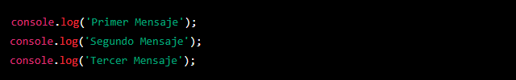
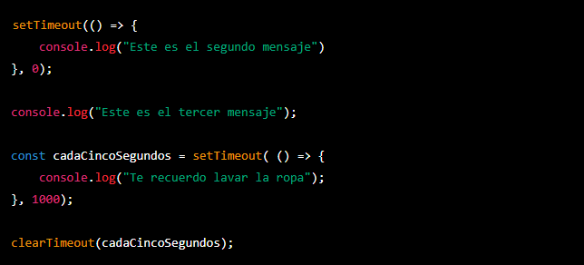
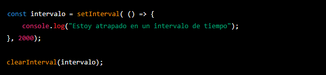
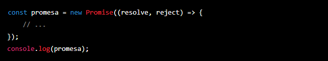
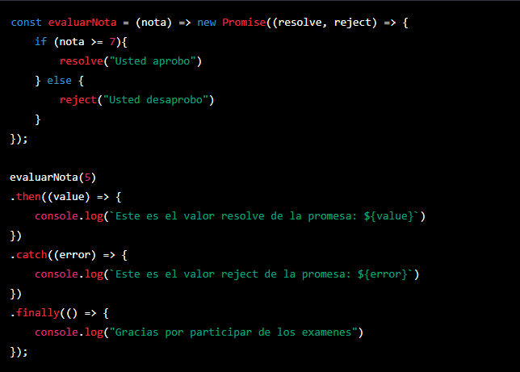

Temario de la clase:
- Asincronias
- Promesas
ASYNC: Asincronismo
Javascript es un lenguaje asíncrono, lo que significa que su forma de procesar algoritmos se basa en una cola de eventos, donde cada evento se ejecuta en el orden en que llega, y no necesariamente en el orden en que se llama. El objetivo de esta sección es entender cómo funciona el asincronismo en Javascript y cómo utilizarlo para mejorar el rendimiento y la experiencia del usuario.
Call Stack y Sincronía
El Call Stack es la pila de ejecución de Javascript, es una estructura de datos LIFO (Last in, first out) que almacena las funciones y métodos que están siendo ejecutados. El Javascript siempre procesa el call stack de forma síncrona, es decir, una función o método debe ser completamente ejecutado antes de que se pueda continuar con la siguiente.
En el ejemplo anterior el orden de ejecucion sera totalmente sincrono, o sea se respeta el orden de las sentencias
setTimeout y clearTimeout
setTimeout() es un método asíncrono que permite ejecutar un callback después de un tiempo específico en milisegundos. El método recibe dos argumentos obligatorios: el callback y el tiempo en milisegundos. Por otro lado, clearTimeout() permite interrumpir el proceso asíncrono setTimeout.
setInterval y clearInterval
setInterval() es un método asíncrono que permite ejecutar un callback cada cierto tiempo especificado en milisegundos, en un loop. Por otro lado, clearInterval() permite interrumpir el proceso asíncrono setInterval.
PROMISES: Promesas
Las promesas en Javascript representan un evento a futuro, es decir, una operación que se realiza de manera asíncrona y cuya finalización o resultado se desconoce en el momento de su creación. Una promesa tiene tres estados posibles: pending, fulfilled y rejected. Una vez que se ha cumplido o fallado una promesa, ya no puede cambiar de estado. En este documento, vamos a explorar varios métodos y conceptos relacionados con las promesas en Javascript.
Creacion de promesas
Para crear una promesa en Javascript se utiliza el constructor new Promise(executor), donde el parámetro executor es una función que recibe dos callbacks: resolve y reject. La función executor se ejecuta de forma inmediata al crear la promesa, y su objetivo es definir el comportamiento de la promesa en caso de éxito (resolve) o fracaso (reject).
Utilizando promesas
Una vez creada una promesa, para acceder a su resultado se utilizan los métodos then, catch, y finally. El método then se utiliza para manejar el resultado de una promesa cumplida (resolve), y permite acceder al valor retornado por su callback. El método catch se utiliza para manejar el resultado de una promesa fallida (reject), y permite acceder al valor retornado por su callback. Por último, el método finally se ejecuta independientemente del resultado de la promesa, y se utiliza para realizar tareas de limpieza o notificaciones.
Promesas anidadas y encadenadas
En algunas situaciones, es necesario realizar múltiples operaciones asíncronas de forma secuencial o en paralelo. En estos casos, es posible anidar varias promesas mediante el uso de then y catch, o encadenar varias promesas mediante el retorno de una nueva promesa en el callback de then o catch.